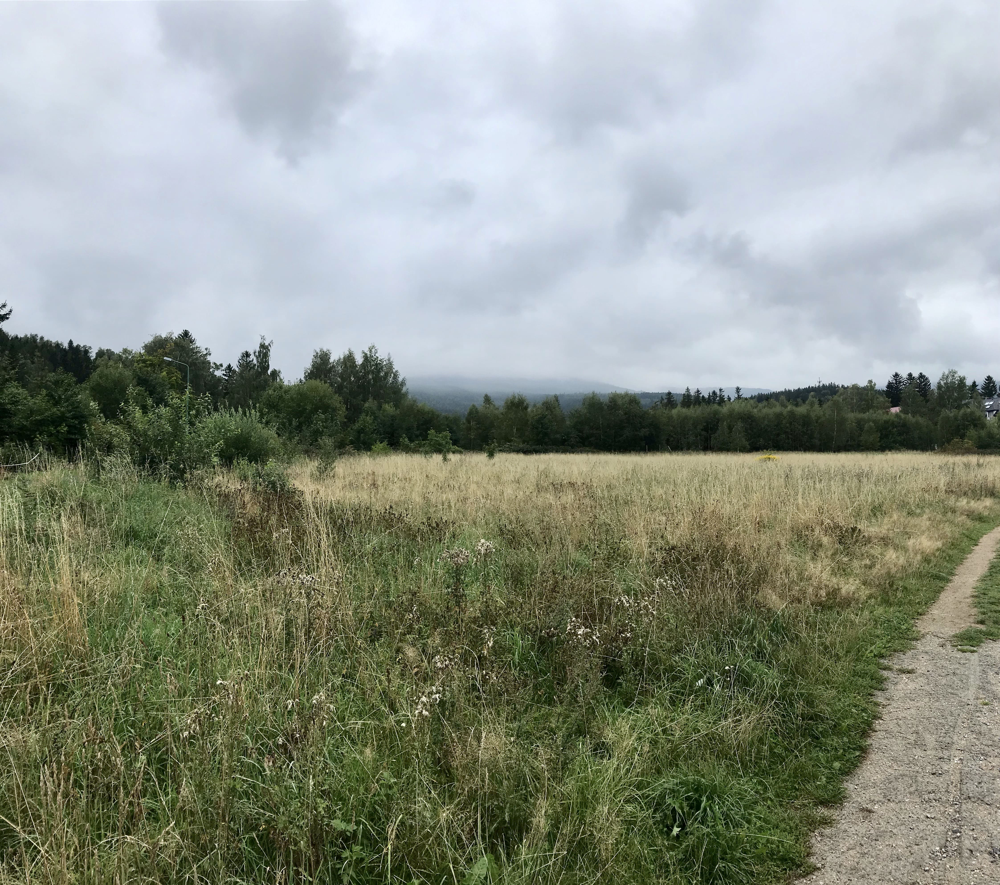
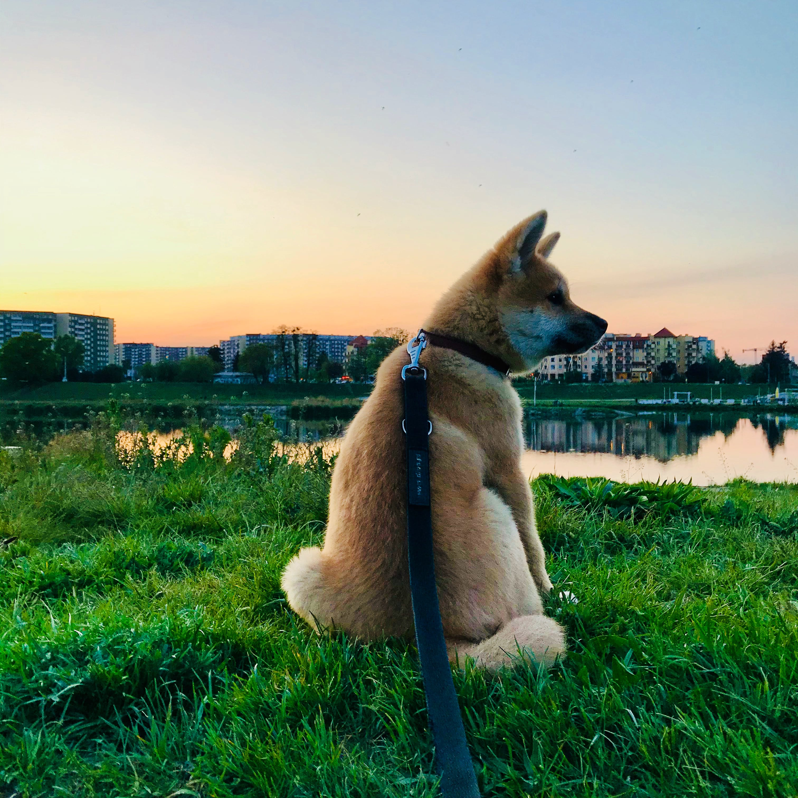
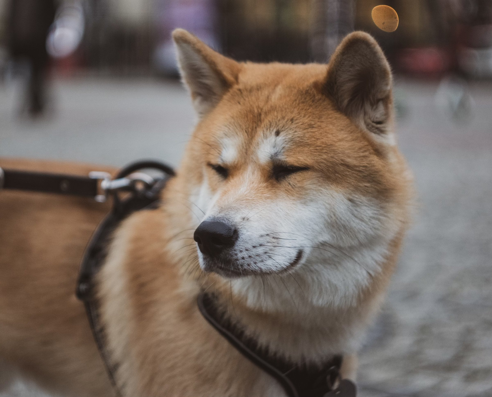

Розділ 1
Я обожнюю подорожі, адже вони дарують нові враження, знайомства та можливість відкривати для себе світ. Мені подобається досліджувати нові місця, знайомитися з культурою різних народів і пробувати місцеву кухню. Кожна подорож — це маленька пригода, яка залишає після себе яскраві спогади та надихає на нові звершення. Незалежно від того, чи це гірські походи, прогулянки старовинними вуличками міст або відпочинок біля моря, я завжди відкритий до нових маршрутів і незабутніх моментів.Подорожі для мене — це не просто зміна місця, а можливість розширити власні горизонти, відчути дух пригод і зануритися в нову атмосферу. Я люблю спонтанні поїздки, коли не знаєш наперед, що чекає за наступним поворотом, і ретельно сплановані маршрути, які дозволяють максимально відчути особливості кожного куточка світу. Особливо мене захоплюють місця з багатою історією та унікальною архітектурою, де можна годинами гуляти, уявляючи, як тут жили люди сотні років тому. Але не менш цікаві для мене й дикі природні ландшафти — гори, ліси, озера, де можна втекти від метушні та насолоджуватися тишею й величчю природи. Кожна поїздка залишає в серці щось особливе — від теплих зустрічей із місцевими жителями до несподіваних відкриттів, які змінюють світогляд. Саме тому подорожі стали невід’ємною частиною мого життя, і я з нетерпінням чекаю нових маршрутів, які ще попереду.
Рекомендації в подорожі
- Плануйте, але залишайте місце для спонтанності
- Легкий багаж – більше свободи
- Вивчіть основні фрази місцевою мовою
- Заздалегідь бронюйте житло та квитки
- Будьте відкритими до нового
- Дотримуйтеся місцевих традицій і правил
- Майте страховку та копії документів
- Не забувайте насолоджуватися моментом
Розділ 2
- Акіта-іну — це великі та потужні собаки, з міцною будовою тіла та широкою головою.
- Характер та поведінка
- Виховання та тренування
Aкіта Іну Акіта-іну — це велика та велична порода собак, що має глибоке коріння в японській
культурі та історії. Існує навіть легенда про Хачіко, знаменитого акіта та величезним інтелектом. Ось більш
детальна інформація про цю породу
Історія походження:Акіта-іну — порода, що походить з Японії, і була
названа на честь регіону Акіта, де ці собаки спочатку
використовувались для полювання на великих диких тварин, таких як ведмеді, олені та кабани. Порода була відома
своєю силою та витривалістю, а також здатністю працювати в суворих умовах.
Спочатку акіта-іну використовувалися лише для того, щоб захищати і приносити трофеї своїм господарям. У часи
правління самураїв, ці собаки стали символом мужності та відданості. Існує навіть легенда про Хачіко,
знаменитого акіта, який чекав на свого померлого господаря на вокзалі протягом дев’яти років — це приклад
неймовірної вірності та відданості цієї породи.
Вони мають виразні очі, які часто передають враження гідності та самодостатності. Шерсть акіти густа,
подвійна, з м’яким підшерстям, що дозволяє їм витримувати низькі температури.
Розмір: зростання — від
61 до
71 см у плечах, вага — від 32 до 59 кг.
Забарвлення: акіта-іну може бути різних забарвлень: від білого
до
червоного, тигрового, а також із чорними або білими відмітинами на морді.
Акіта-іну відома своїм сильним характером. Вони дуже самостійні, іноді навіть незалежні, і не завжди шукають
увагу у своїх власників. Однак це не означає, що вони не люблять своїх господарів. Акіта має велику
відданість своїй родині і може бути дуже ніжною та захисною, якщо відчує загрозу.
Самодостатність:
Акіта-іну часто описують як «собаку, яка мислить сама за себе». Вони можуть бути важкими для навчання,
оскільки мають власну думку, але вірні своїм господарям.
Охоронці: Ці собаки мають природний інстинкт
охорони, тому вони часто ставляться насторожено до
незнайомців. Проте вони можуть бути дуже добрими до своїх власників та їхніх родин, якщо відчувають безпеку
та довіру.
Граціозність і спокій: Незважаючи на свою силу, акіта-іну часто є спокійними, навіть
граціозними
собаками, що люблять проводити час у власному просторі.
Акіта-іну потребує стабільного, впевненого і терплячого власника. Це собаки, які мають сильно виражену волю,
тому важливо з раннього віку встановлювати чіткі межі та правила.Навчання: Акіта-іну не завжди слідують
командами, як інші породи собак. Вони можуть бути впертими, тому навчання має бути м’яким, але в той же час
твердим.
Соціалізація: Оскільки акіти можуть бути настороженими до незнайомців, важливо з самого ранку
знайомити їх з різними людьми та тваринами. Це дозволяє зробити їх більш відкритими і менш агресивними.
Фізична активність: Акіта потребує регулярних прогулянок і фізичних навантажень, хоча вони й не
настільки активні, як деякі інші породи. Проте вони люблять тривалі прогулянки на свіжому повітрі і час,
проведений з господарем
Розділ 3
Здоров'я та догляд
Акіта-іну — це здорові собаки, але, як і у багатьох великих порід, вони можуть бути схильні до деяких спадкових захворювань, таких як дисплазія кульшового суглоба, хвороби серця та шлунково-кишкові проблеми. Важливо регулярно відвідувати ветеринара та дбати про їх здоров’я.Шерсть: Акіта має густу шерсть, що потребує регулярного догляду. Вони сильно линяють, особливо під час сезонної линьки, тому регулярне чищення допоможе уникнути звалювань шерсті.Годування: Для цієї породи важливо правильно збалансувати раціон. Акіта-іну може мати схильність до переїдання, тому важливо контролювати кількість їжі і уникати годування продуктами, що можуть призвести до ожиріння.
Розділ 4
Порода для досвідчених власників
Акіта-іну — це чудові собаки для досвідчених власників, які мають достатньо часу та терпіння для виховання
такої незалежної породи. Вони потребують уважного підходу та сильної, але люблячої рукавиці, щоб стати чудовими
компаньйонами та охоронцями.Висновок
Акіта-іну — це не просто собака, це справжній партнер, який може бути
найкращим другом для тих, хто готовий зрозуміти та підтримати його характер. Вони чудово підходять для людей,
які шукають відданого супутника, здатного захистити їх та бути вірним другом на довгі роки.